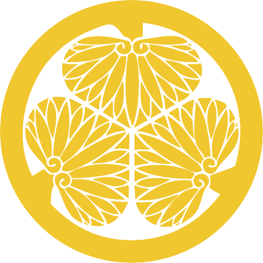

SANADAMARU
Một bộ phim truyền hình lịch sử Nhật Bản và bộ phim truyền hình NHK taiga thứ 55.
Viết bởi: Kōki Mitani Đạo diễn bởi: Takafumi Kimura
Sanada Maru là một bộ phim truyền hình lịch sử Nhật Bản năm 2016 và bộ phim truyền hình NHK taiga thứ 55. Bộ truyện được đặt theo tên của Sanada Maru, một pháo đài được bảo vệ bởi Sanada trong Cuộc bao vây Osaka năm 1615. Được viết bởi Kōki Mitani, nó đóng vai chính Masato Sakai trong vai samurai Sanada Nobushige.
Gia tộc Toyotomi

Gia tộc Sanada
Gia tộc Tokugawa
Vai diễn và Nhân vật

vào vai Sanada Yukimura
Sanada Yukimura (真田 幸村, 1567 – 3/6/1615), còn gọi là: Sanada Nobushige
vào vai Toyotomi Hideyoshi
Toyotomi Hideyoshi (豊臣 秀吉, 2/2/1536 – 18/9/1598), còn gọi là Hashiba Hideyoshi
vào vai Tokugawa Ieyasu
Tokugawa Ieyasu (徳川家康, 1/31/1543 – 1/6/1, còn gọi là Đức Xuyên Gia Khang
Hãy liên hệ với chúng tôi nếu bạn cần thông tin chi tiết hơn về bộ phim
Nhận thêm thông tin về nhân vật:

Sanada Yukimura (真田 幸村, Chân Điền Hạnh Thôn) (1567-3/6/1615), tên đầy đủ là Sanada Saemon-no-suke Nobushige (真田 左衛門佐 信繁, Chân Điền Tả Vệ Môn Tá Hạnh Thôn), còn được gọi là Sanada Nobushige (真田信繁, Chân Điền Tín Phồn). Cha là daimyo Sanada Masayuki, và là em của Sanada Nobuyuki. Ông lấy Akihime con gái của Otani Yoshitsugu. Ông có hai con trai là Daisuke (Yukimura) và Daihachi (Morinobu) cùng nhiều con gái. Ông được Shimazu Tadatsune mệnh danh là "anh hùng số 1 của Nhật Bản".
Nhận thêm thông tin về nhân vật:

Toyotomi Hideyoshi (豊臣 秀吉, とよとみ ひでよし, Hán-Việt: Phong Thần Tú Cát) còn gọi là Hashiba Hideyoshi (羽柴 秀吉, はしば ひでよし, Hán-Việt: Vũ Sài Tú Cát) (26 tháng 3 năm 1537 – 18 tháng 9 năm 1598) là một daimyo của thời kỳ Sengoku, người đã thống nhất Nhật Bản. Ông kế thừa vị lãnh chúa quá cố của mình, Oda Nobunaga, và là người đã kết thúc thời kỳ Sengoku. Thời kỳ nắm quyền của ông thường được gọi là thời kỳ Momoyama, theo tên lâu đài của ông. Ông nổi tiếng với những di sản văn hóa của mình, bao gồm đặc quyền mang vũ khí của tầng lớp samurai. Toyotomi Hideyoshi thường được coi là người thứ hai thống nhất Nhật Bản.
Nhận thêm thông tin về nhân vật:

Tokugawa Ieyasu (trước đây được đánh vần là I-ye-ya-su) (tiếng Nhật: 徳川 家康 (Đức Xuyên Gia Khang); 31 tháng 1 năm 1543 – 1 tháng 6 năm 1616) là một nhân vật nổi tiếng trong lịch sử Nhật Bản.[1] Ông là người sáng lập và cũng là vị Shōgun (Tướng Quân) đầu tiên của Mạc phủ Tokugawa, nắm quyền từ sau trận Sekigahara năm 1600 cho đến Minh Trị Duy Tân năm 1868. Ieyasu lên nắm quyền từ năm 1600, nhận danh hiệu Chinh di Đại tướng quân năm 1603, thoái vị năm 1605, nhưng thực tế vẫn nắm quyền cho đến khi qua đời năm 1616.